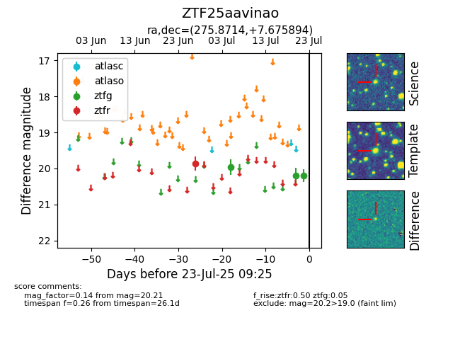

Target ZTF25aavinao at 2025-07-23 12:37, see:
FINK: fink-portal.org/ZTF25aavinao
Lasair: lasair-ztf.lsst.ac.uk/objects/ZTF25aavinao
ALeRCE: alerce.online/object/ZTF25aavinao
alt names
ZTF25aavinao (ztf,fink)
coordinates:
equatorial (ra, dec) = (275.8714,+7.67589)
galactic (l, b) = (36.6484,+9.68396)
photometry
last ztfg=20.21, ztfr=19.86
3 ztfg, 1 ztfr detections
